Dr. Strange... Moose

Dr. Strange... Moose
or: How I Learned to Stop Worrying and Love Perl
Bryan Gmyrek
LiquidWeb, Inc
WTF

WTF
- Who is this guy anyway?
- No, I'm not one of the authors of Moose, the coolest kid on the block, or one of the world's foremost experts on OO
- I'm an ex-particle physicist, who somehow learned Perl by mistake in graduate school
- I think "The Jerk" is the funniest move ever made
Then why did you write this talk?
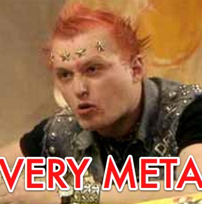
Then why did you write this talk?
- I just like Moose and I wanted to brush up on it, so I wrote a module to write this talk with
- This Moose talk writes itself WITH Moose ---->>
- ( More on that later )
- Moose is very meta too
Would You Like to Know More about Moose Internals?
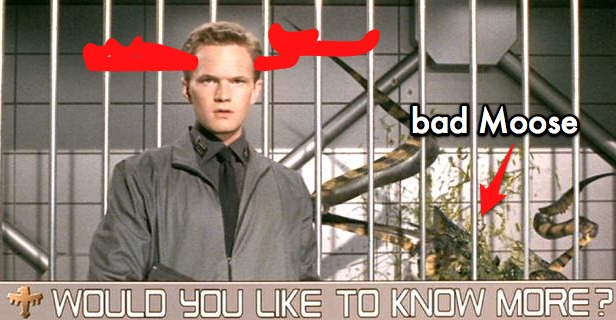
Would You Like to Know More about Moose Internals?
Moose for idiots
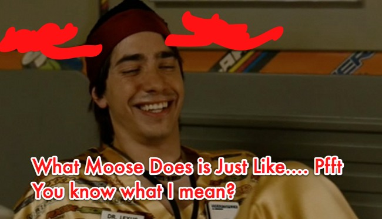
Moose for idiots
- Moose is a Meta-Object system... what is that?
- It's what developers crave (It's got ELECTROLYTES and $#!T)
- Basically, it like uses objects to like do stuff with objects
Moose for immortals
Moose for immortals
- If you really want to know how Moose REALLY works, ask this guy
- He was a JavaScript developer until 2002
- http://perlcast.com/audio/Perlcast_Interview_050.mp3
All I ever asked for was frikkin sharks with frikkin...
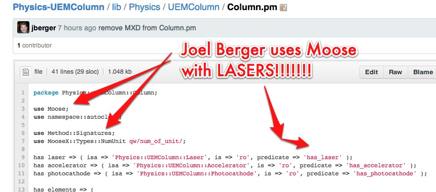
All I ever asked for was frikkin sharks with frikkin...
I do declare!
I do declare!
- Or ask this guy, he's hella smart --------->
- MooseX::Declare is everything you hoped Moose would be, and more
- A lot of it thanks to MooseX::Method::Signatures, which is also available in Method::Signatures, apart from MooseX::Declare
- This is a great talk, called Moose for Ruby Programmers, by Piers Cawley http://vimeo.com/4627327 (5:00)
Dude, did you just shift yourself???
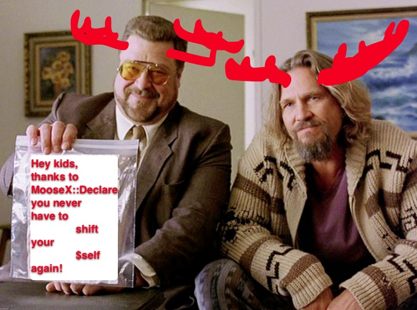
Dude, did you just shift yourself???
- It sweeps SO much more under the rug, it's CRAZY (see next slide please)
- Seriously though, it means you can write beautiful code
- But still use all of things you love about Perl (The CPAN, one liners, magical variables, map, grep, sort, oh my!)
- (I'm talking about this vs. giving up and using Ruby or Python or what not!)
Perl vs. Moose vs. MooseX Declare Smackdown
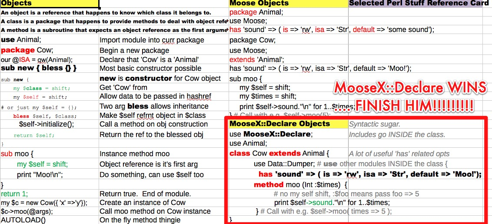
Perl vs. Moose vs. MooseX Declare Smackdown
Moar MooseX::Declare Please
Moar MooseX::Declare Please
- All of the examples in this talk are MooseX::Declare, because I like it a lot
- MooseX::Declare gives you
- Moose and MooseX::Method::Signatures, Keywords like class, The class is made immutable for you
- You don't have to end your file with 1; or 'POE POE POE POE'; TRUE; or FALSE;
- It cleans up after itself with namespace::autoclean
- It does what you hoped Moose would, so you can just freaking code!
Why be different?
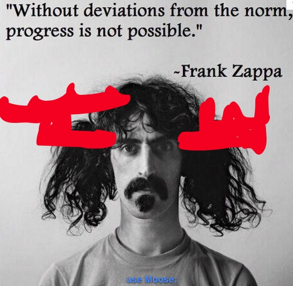
Why be different?
- This talk uses the S5 presentation system
- To display HTML generated with module I wrote for this talk
- Presentation::Builder
- https://github.com/physicsdude/Presentation-Builder
- Downsides of any presentation system for code talks include broken code samples, dealing with stupid markup you don't understand and/or don't want to deal with, having to show example code instead of real code, adding images can be a huge pain, no frelling syntax highlighting!? etc.
Advacned OO Design
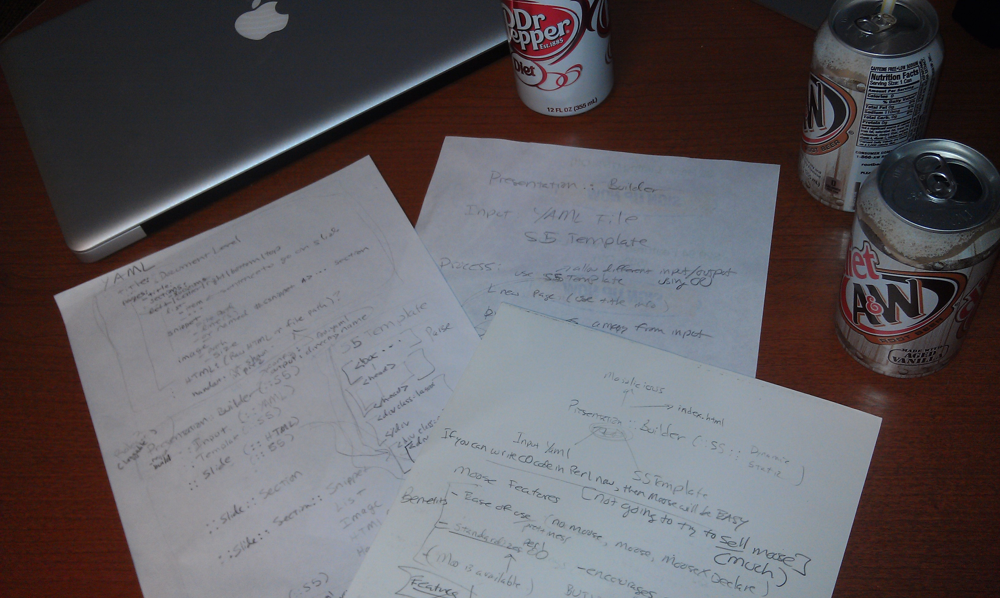
Advacned OO Design
- Pencil and paper, oh my
- Using MooseX::Declare encourages objectyness
- Rough around the edges
I can Presentation::Builder and so can YOU
I can Presentation::Builder and so can YOU
- Get your favorite S5 template You can do whatever you want in the header of the template and any content in the 'presentation' div will be overwritten
- Make a YAML config file file
- If you want to use snippets, mark up your code with
#<snip some name>
...
#</snip> - Add some meta info and your slides to the config file
- Ship IT!
- Would you like to know more?
But wait, there's more!
But wait, there's more!
use Presentation::Builder; my $pb = Presentation::Builder->new( input_file => "data/test-input.yaml", template_file => "data/index.base.html", output_file => "data/index.html", ); $pb->generate();
- Yes, this example was pulled from the code used to generate the text you're reading right now, and syntax highlighted for HTML using Text::VimColor
- Oh yeah, you have to add the contents of less.css to your template's css or something if you want that to work (room for improvement here)
What is this funky YAML config file you speak of?
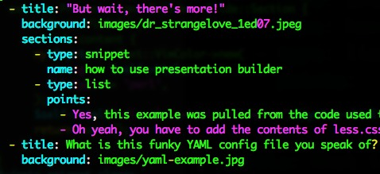
What is this funky YAML config file you speak of?
Do the MOOSE already!
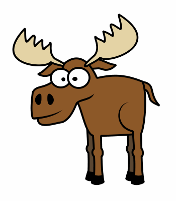
Do the MOOSE already!
- What we'll cover is just some of Moose
- Has (isa, is, lay_build)
- Objects, extends, and overriding
- Method Modifiers (before/around/after)
- Method Signatures
- Type Constraints
- Coercions
- Moose::Autobox
I can has has?
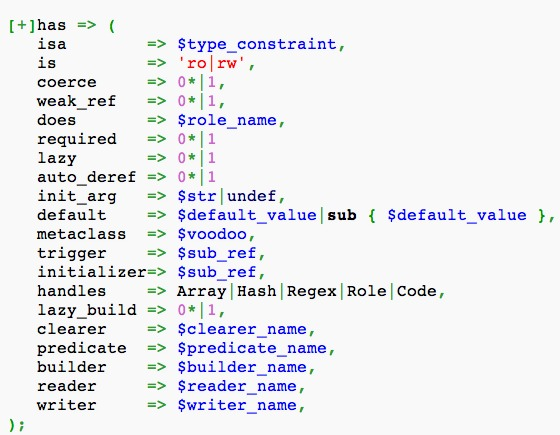
I can has has?
- Has is probably the Moosey thing you'll use the most
- Defines your class data
- Keeps you from doing things like $self->{fubar}
- Does type checking, read/write access, lazy building and more
Has, and isa
Has, and isa
has 'list' => ( isa => 'ArrayRef[Presentation::Builder::Slide]', is => 'rw', default => sub { [] }, );
Objecty Perl

Objecty Perl
use MooseX::Declare; use Method::Signatures::Modifiers; class Presentation::Builder::Slide::Section { use Presentation::Builder::Types; has 'type' => ( isa => 'Str', is => 'ro', required => 1 ); has 'location' => ( isa => 'Str', is => 'ro', default => 'slide_left' ); has 'html' => ( isa => 'Str', is => 'rw'); method content { return "<div class='section ".$self->location."'>\n".$self->html."\n</div>"; } }
Snippet class, Extends and Override
class Presentation::Builder::Slide::Section::Snippet
extends Presentation::Builder::Slide::Section {
use Text::VimColor;
override content {
my $syntax = Text::VimColor->new(
string => $self->html,
filetype => 'perl',
);
$self->html("<div class='snippet'><pre>".$syntax->html."</pre></div>");
return super();
}
}
Be Lazy with lazy_build
Be Lazy with lazy_build
has 'data' => ( isa => 'HashRef', is => 'ro', lazy_build => 1 ); method _build_data { my $ret = Load(scalar File::Slurp::read_file($self->input_file));
- Note the fancy 'method' keyword above
- AND That I'm not shifting myself
- Gee thanks method signatures!!
Method Modifiers: before/around/after
around content {
my $str;
$str .= "\n<div class='slide'>\n";
# This is a hack to make S5 see the slide title, the h1 has to be first apparently
if ( $self->background ) {
$str .= "<h1 style='display: none'>".$self->title."</h1>";
$str .= "<div style='float: right;'><img class='slide_background_img' src='".$self->background."'></div>";
}
$str .= $self->$orig(@_);
$str .= "\n</div>\n";
return $str;
}
Method Signatures, colons, and YOU
Method Signatures, colons, and YOU
- use Method::Signatures::Modifiers; - slight speed boost + better error messages Make sure to RTFM, not exactly the same as MooseX::Method::Signatures (but you probably don't care)
method add (Str :$title, ArrayRef :$sections, ImageFile :$background) {
- The : means that you can call this like $pb->slides->add(title => $some_title);
- If you mean to do Str :$title above, and forget the :, here's the error you get with MSM if you call it like $pb->slides->add(title => 'Flouridated water, communists and YOU!');
- In call to Presentation::Builder::Slides::add(), was given too many arguments, it expects 1 at bdg.pl line 14.
Say what?
- BUT if you don't use MSM, here's the error you get when you call $pb->slides->add(title => 'foo');
Validation failed for 'Tuple[Tuple[Object,Str],Dict[]]' with value "[ [ Presentation::Builder::Slides=HASH(0x7ff8e10289b0), "title", "foo" ], { } ], Internal Validation Error is: \n [+] Validation failed for 'Tuple[Object,Str]' with value "[ Presentation::Builder::Slides{ type: "S5" }, "title", "foo" ]"\n [+] More values than Type Constraints!" at /Library/Perl/5.12/MooseX/Method/Signatures/Meta/Method.pm line 435 MooseX::Method::Signatures::Meta::Method::validate('MooseX::Method::Signatures::Meta::Method=HASH(0x7ff8e2a27b78)', 'ARRAY(0x7ff8e289f388)') called at /Library/Perl/5.12/MooseX/Method/Signatures/Meta/Method.pm line 151 Presentation::Builder::Slides::add('Presentation::Builder::Slides=HASH(0x7ff8e10289b0)', 'title', 'foo') called at bdg.pl line 14 | 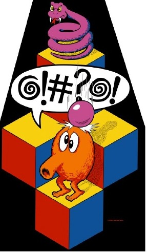 |
Handle anything
has 'template' => ( isa => 'Presentation::Builder::Template', is => 'rw', handles => ['dom'], lazy_build => 1, ); method _build_template { my $t_pkg = "Presentation::Builder::Template::".$self->type; return $t_pkg->new(template_file => $self->template_file); }
- Here's an example of "Method Delegation"
- The handles => ['dom'] part means that you can call $self->dom() and that call will be 'handled' by ::Template
- It'll be equivalent to $self->template->dom();
This is not constraining enough!
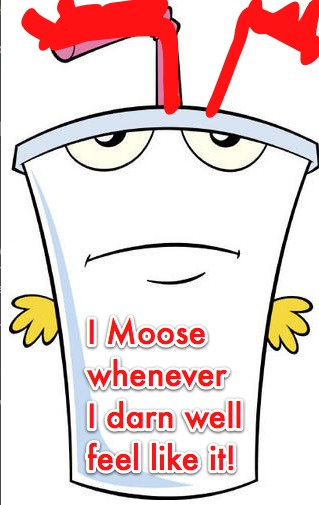
This is not constraining enough!
use MooseX::Declare; use Method::Signatures::Modifiers; class Presentation::Builder::Types { use Moose::Util::TypeConstraints; subtype 'File', as 'Str', where { return 1 if -e $_ }; subtype 'ImageFile', as 'Str', where { /\.(jpg|png|gif|jpeg)$/i }; # Don't require this to be a valid image on build
class_type 'Mojo::DOM';
Coercion - Make them an offer they cant refuse
Coercion - Make them an offer they cant refuse
coerce 'ConfigFile', from 'Str', via { _coerce_file($_) }; sub _coerce_file { my $file_name = shift; foreach my $d ( @INC ) { my $full_path = "$d/$file_name"; if ( -e "$d/$file_name" ) { return $full_path; } } return $file_name; }
has 'input_file' => ( isa => 'ConfigFile', is => 'ro', coerce => 1, required => 1, );
Coercing objects
use Moose::Util::TypeConstraints; subtype 'MySections', as 'ArrayRef[Presentation::Builder::Slide::Section]'; coerce 'MySections', from 'ArrayRef', via { _coerce_mysections($_) }; sub _coerce_mysections { return [ map { my $s_pkg = "Presentation::Builder::Slide::Section::" . ucfirst($_->{type}); $s_pkg->new($_); } @{$_} ]; } has 'sections' => ( isa => 'Undef|MySections', is => 'rw', default => sub { [] }, coerce => 1, );
What do you get when you put a Moose in a box?
my $s_pkg = "Presentation::Builder::Slide::".$self->type; $self->list->push($s_pkg->new(title => $title, sections => $sections, background => $background));
- If you use Moose::Autobox, you get fun things like this for free
- Pluse even cooler stuff like this (from the docs)
print [ 1 .. 10 ]->map(sub { $_ * $_ })->join(', ');
Is Moose a Commie plot, like Flouride?
Is Moose a Commie plot, like Flouride?
- Moose is great, but it has dowsides
- Compile time penalty
- New stuff to learn
- You can Moo if the performance issues bother you
- This has almost 2/3 of the features of Moose, few dependencies, but is compatible with Moose
- Ask Matt Trout about that
Uncle Moose Wants YOU!
Uncle Moose Wants YOU!
- But what can YOU do?
- Start using MOOSE, there's strength in numbers!
- Patches wanted for Presentation::Builder
- Take different input/output format
- Improve options for background/slide images
- Allow snippets to be specified using file name and line numbers
- Documentation
- Take an index.html as input, process, spit index.html output
- Or, write your own darn module!
YEEEEEEEEEEEEEEEEEHHHHHHHAAAAAAAAA
YEEEEEEEEEEEEEEEEEHHHHHHHAAAAAAAAA
- Now that you know enough to be DANGEROUS, go forth and Moose!